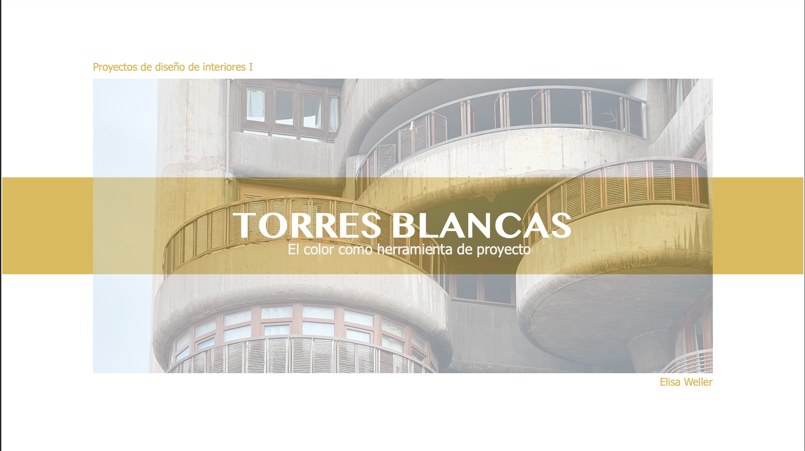

Diseño de interiores · Color
Torres Blancas
Una propuesta de interiorismo que utiliza el color como herramienta arquitectónica para modificar la percepción, la atmósfera y el recorrido dentro del espacio.

Contexto
El proyecto se desarrolla a partir del edificio Torres Blancas, diseñado por Francisco Javier Sáenz de Oiza en Madrid.
La propuesta explora cómo el color puede intervenir en un espacio residencial y convertirse en una herramienta de proyecto, no únicamente en un elemento decorativo.
Proceso
La investigación parte de la Polychromie Architecturale de Le Corbusier y de su idea de utilizar el color para modificar la luz, la profundidad y la percepción espacial.
Los tonos cálidos, fríos y neutros se organizan para activar, ampliar, equilibrar o conectar diferentes zonas del interior.
Resultado
El resultado es una propuesta de interiorismo en la que el color construye la identidad del espacio y guía la experiencia de sus habitantes.
Ficha técnica
- Disciplina
- Diseño de interiores
- Enfoque
- Color y percepción espacial
- Contexto
- Proyecto académico individual